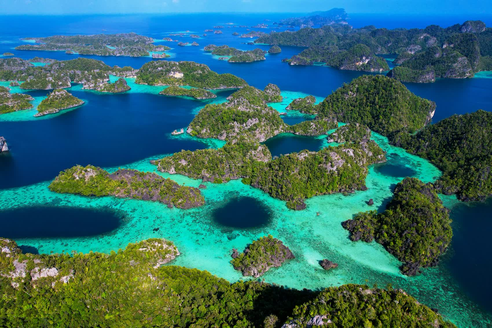
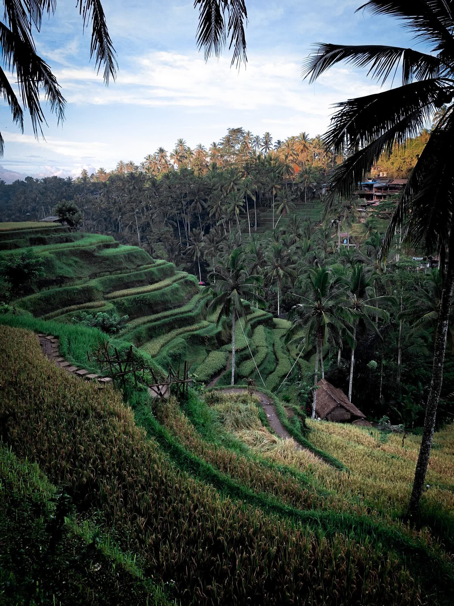
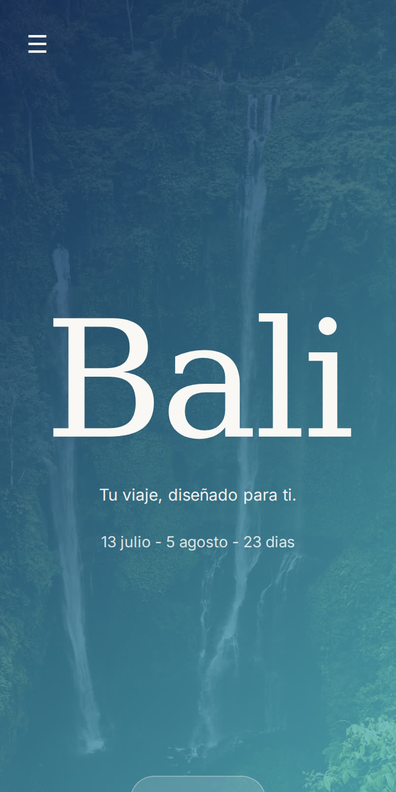

Te lo preparamos entero y lo abres desde el móvil. Desde 149 €.
Primero te preguntamos cómo te gusta viajar, qué te da pereza y a qué ritmo vas. El destino sale de ahí. A veces la gente llega con un sitio en la cabeza y acaba en otro que le pega muchísimo más.
países recorridos, uno a uno

Un viaje que sí es tuyo se siente distinto.
Es un enlace que abres en el móvil con el viaje entero dentro: el día a día, dónde dormir, dónde comer bien y cómo moverte, con los mapas ya puestos.
Sin instalar nada. Sin buscar nada.

Madrugar porque merece la pena. Meterte en el agua cada día. Moverte, entrenar si te apetece, comer bien y de verdad, dormir pronto.
Quiero irHablamos con cada persona antes de darle su plaza, para que el grupo encaje.